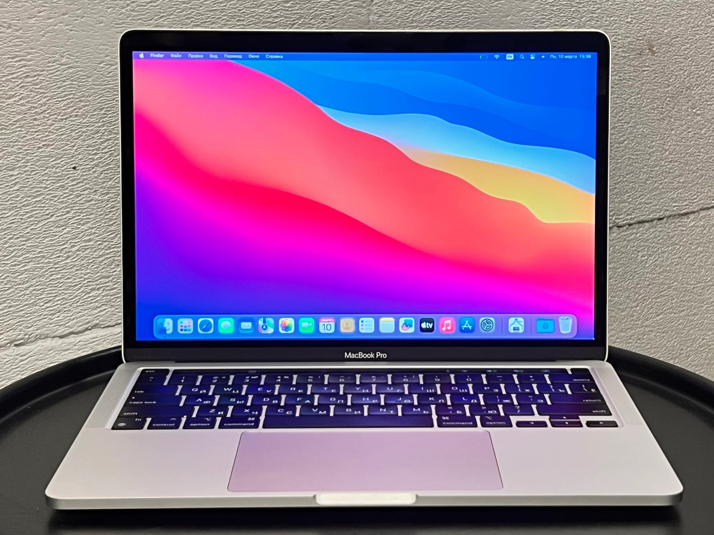
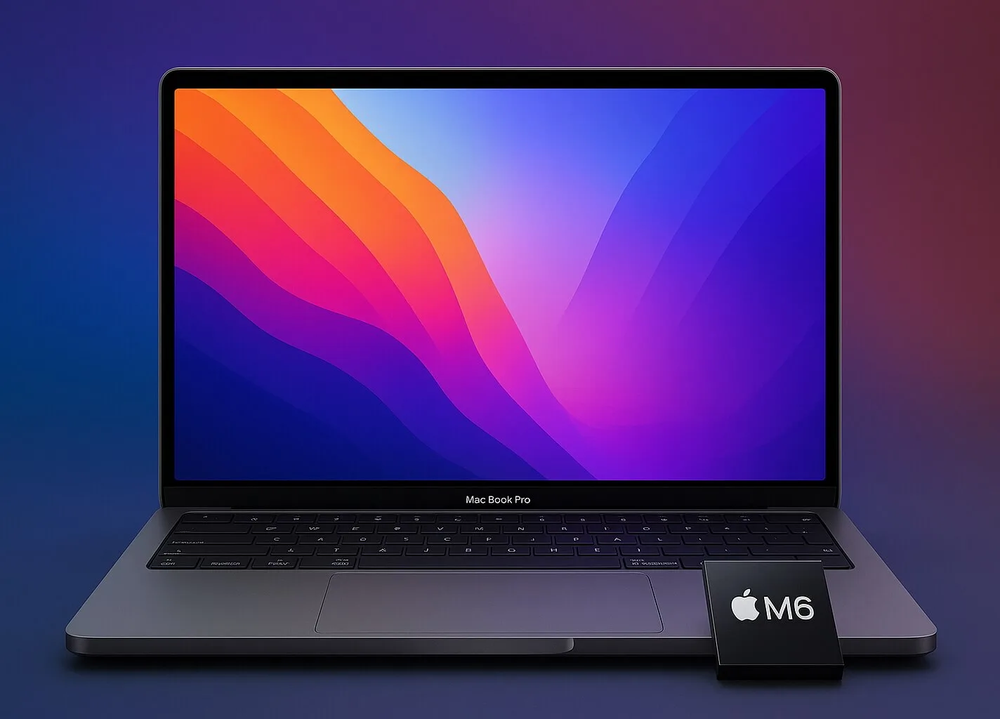

Macbook Pro 2020 Страна-разработчик:США|Стартовая цена:1500$Первый MacBook на базе собственного ARM-чипа Apple M1 был представлен в ноябре 2020 года. Это событие завершило многолетнюю зависимость компании от архитектуры x86 и процессоров Intel, сформировав новый стандарт производительности и энергоэффективности для компактных ноутбуков.
Осенью 2020 года Apple выпустила две базовые модели на M1: MacBook Air и MacBook Pro 13. Реальные тесты профильных изданий и пользователей подтвердили ключевые заявления производителя:

Macbook Pro 2026 Страна-разработчик:США|Стартовая цена:1600$Современный MacBook Pro на базе чипов серии Apple Silicon представляет собой вершину эволюции собственных процессоров компании, выведшую профессиональные ноутбуки на новый уровень производительности. Переход на архитектуру поколений M3 и M4 окончательно закрепил доминирование Apple в сегменте портативных рабочих станций, предложив специалистам мощности, которые ранее были доступны только на стационарных ПК.
Главным отличием современных моделей Pro-серии стал бескомпромиссный баланс между экстремальной вычислительной мощностью и автономностью. Ноутбуки легко справляются с тяжелым 8K-видеомонтажем, 3D-рендерингом и обучением нейросетей, сохраняя при этом способность работать до 22 часов от одного заряда и не теряя в скорости при отключении от розетки.